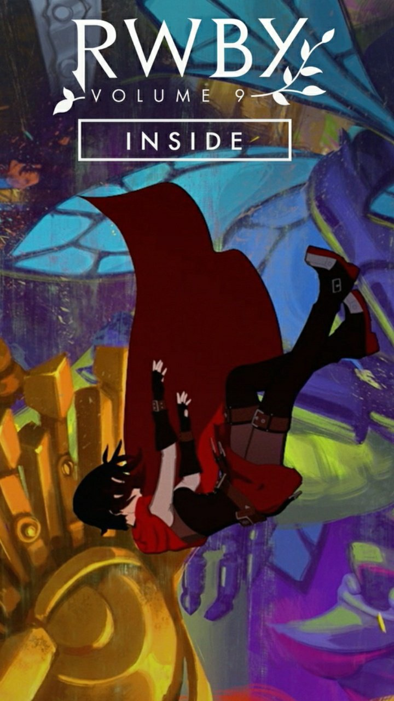

- I love you... Just the way you are. -
Of Solitude and Self„ What happens... if I choose me? ”— Ruby RoseAs her friends fight to protect her body, Ruby finally makes her decision...
Katt a projekthez
2023.YY.YY.
 - Kép alá valami. -
- Kép alá valami. -
A Tale Involving a Tree„ Ezt nem értem. Alyx? The Pleasers? Most meg Ruby? What does this place want?! ... Mégis mit csinálok rosszul? ”— Jaune ArcWith Ruby gone, our remaining heroes must continue on...
Katt a projekthez
2023.YY.YY.
 - Kép alá valami. -
- Kép alá valami. -
Tea Amidst Terrible Trouble„ Valakitől egy idézet. ”— IdézőAll alone, Ruby winds up at a tea party hosted by Neo...
Katt a projekthez
2023.YY.YY.
 - Kép alá valami. -
- Kép alá valami. -
The Perils of Paper Houses„ Valakitől egy idézet. ”— IdézőTeam RWBY are introduced to the Paper Pleasers, leading to some harsh truths...
Katt a projekthez
2023.YY.YY.
 - Olyan érzés, mintha örökké erre vártam volna. -
- Olyan érzés, mintha örökké erre vártam volna. -
Confessions Within Cumulonimbus Clouds„ Azt hittem, talán soha többé nem látlak titeket. De... tudtam, hogyha eleget várok, akkor ide fogtok kerülni. Akárcsak én. ”— JauneAz út folytatásához valakinek szembe kell néznie a problémáival...
Katt a projekthez
2023.YY.YY.
 - Válassz ezek közül bármit, ami megtetszik,
- Válassz ezek közül bármit, ami megtetszik,
és az segít enyhíteni a terhedet. -
A Cat Most Curious„ Azt hiszem, jobb, ha a macskával megyek, nehogy elvonja a figyelmüket egy fényes ajtókilincs, és soha ne térjenek vissza. ”— YangAz RWBY csapat karneválhoz érkezik, miközben Ruby további igazságokkal és egy titokzatos harcossal szembesül.
Katt a projekthez
2023.YY.YY.
 - Vadásznők, igaz? Különös dolgok. -
- Vadásznők, igaz? Különös dolgok. -
The Parfait Predicament„ A helyedben jobban aggódnék... ki volt az a félelmetes varázslónő, akit említettél? Ööö... Saleem... Salem...? Hány ereklyére van még szüksége, hogy újra véget érjen a világ? Hogyan állíthatnád meg őt most, hogy Atlas elbukott? ”— The Curious CatA lányok utolérik a titokzatos kíváncsi macskát, és szembesülnek néhány kemény igazsággal önmagukról.
Katt a projekthez
2023.YY.YY.
 - Kihívás elfogadva. -
- Kihívás elfogadva. -
Rude, Red, and Royal„ Azt hallottuk, hogy szeret játszani. ”— RubyAz RWBY csapat elmegy találkozni a Vörös Királlyal... legalábbis ez volt az eredeti terv.
Katt a projekthez
2023.YY.YY.
 - A licit... a szeretet árán kezdődik. -
- A licit... a szeretet árán kezdődik. -
Altercation at the Auspicious Auction„ Amit láttunk, az valószínűtlen. De ez nem jelenti azt, hogy tényleg egy tündérmesében vagyunk. Ezt nem gondoljuk komolyan, ugye?! ”— WeissAz RWBY csapat vándorújta az Ever After-en keresztül egy bazárba vezet, ahol különféle termékeket árulnak érdekes árakon...
Katt a projekthez
2023.YY.YY.
 - Mivan, ha meghaltunk? -
- Mivan, ha meghaltunk? -
A Place of Particular Concern„ Mi ez a hely? ”— WeissMiután átestek a végtelennek látszó űrön, az RWBY csapat egy furcsa világban ébred fel, és ki kell találnia, hogyan élje túl és térjen haza...
Katt a projekthez
2023.XX.XX.
Felkerült a(z) RWBY Chibi mind a négy évadának összes része.
Rövid leírás:
Csatlakozz az RWBY szereplőgárdájához egy új, aranyos vígjátéksorozatban, melyben végtelen az eshetőség! Ez táblának adja ki magát! Az meg süteményt süt! Ő meg rendőrnek adja ki magát! Ez... tényleg elég abszurd. Ez a RWBY CHIBI!
További leírás: Ugrás az első évadhoz
2023.XX.XX.
Sziasztok!
Azt gondoltam naív fejjel, hogy nyáron bőven lesz annyi időm, hogy fordítsak, de sajnos pár dolog közbejött így egy jó ideig nem volt se időm se kedvem ahhoz, hogy folytassam. Ha minden jól megy (ezt ne vedd/vegyétek 100%-nak) legkorábban augusztusban fogok tudni a fordításokkal foglalkozni. De akkor sem fog olyan gyorsan menni.
2023.07.06.

2023 február 18.-án el is kezdődött a RWBY 9.fejezete ami rengeteg pozitív visszajelzést kapott.
A végére kaptunk egy új openinget, ami az "Inside" nevet kapta, bátorkodtam lefordítani és így fel is került magyar felirattal a RWBY 9.fejezetének a főcímdala, az Inside.
>>> Komponálta: Martin Gonzalez, Casey Lee Williams
>>> Énekli: Casey Lee Williams
A videó megtekintéséhez: ¤ Katt ide ¤
2023.03.02.
Hát végre elérkezett az idő. (2023.02.18.) 16:30-kor Crunchyroll-on debütált is a 9.fejezet első része a tízből. És ezzel kezdve hetente lesznek új részek.
Sajnos elég sokat kell rá várni mire elérhető lesz mindenki számára ingyen. A Rooster Teeth weboldalán 1 évvel később fog megjelenni a sorozat, és akkor is csak az előfizetők számára.
A végén láthattuk és hallhattuk az fejezet Openingjét ami az "Inside" nevet kapta és ugyanúgy mint a többi fejezetot most is Casey Lee Williams énekelte. Komponálta: Martin Gonzalez, Casey Lee Williams.
2023.02.18.

A 'Justice League x RWBY: Super Heroes and Huntsmen, Part One' (eredeti címe: RWBY Justice League) egy közelgő animációs, közvetlen videófilm, amely az azonos nevű képregényeken alapul. 2023. április 25.-én jelenik meg, három nappal azután, hogy a 9.kötet utolsó epizódja a Crunchyrollon megjelenik. A Kerry Shawcross által rendezett és Meghan Fitzmartin által írt film eredeti történetet tartalmaz, amely kibővíti a képregények átmenetét.
Előzetes: Angol
További leírás: Ugrás a Projekthez
2023.02.11.

2023. január 24.-én bejelentették, hogy a RWBY 9.kötete 2023. február 18.-án jelenik meg, kizárólag a Crunchyrollon. A hivatalos előzetest ugyanazon a napon adták ki. Később a Rooster Teeth webhelyen megjelent kérdezz-feleleken felfedték, hogy a kötet 10 fejezetből áll majd, és 2023.02.18.-tól 2023.04.22.-ig fog megjelenni szezonközi szünet nélkül. Az epizódok pontosan egy évvel a Crunchyroll adása után lesznek elérhetőek a Rooster Teeth-nél First előfizetőknek, és valamikor ezután ingyenesek lesznek.
Úgy tűnik, hogy a 9.kötet helyszíne az 1865-ös "Alice kalandjai csodaországban" című regényen és annak 1871-es folytatásán, az "Alice Tükörországban"-on alapul.
Előzetes: Angol, Magyar (feliratos)
2023.01.26.
Akkor itt a mese ideje.
2021.03.14.-én ismerkedtem meg a RWBY sorozattal. Észrevettem, hogy nincsen meg az 5.kötetnek egy része (5. résztől a 14.-ig). Keresgéltem de nem találtam seholsem magyar feliratot. Viszont az alap formázatlan videók fent voltak az interneten, így letöltöttem őket és elkezdtem utána nézegeti, hogy mégis hogyan lehet feliratot eszkábálni egy videóra. Első 2 feliratomat egy kis online "subtitle editor"-al készítettem, de azóta már az Aegisub programmal készítem a feliratokat.
Nem is állítom, hogy a feliratok, amiket készítek azok 100%-osan hibátlanok, de nem egy speedsub. Ez a kis projekt csak egy rajongói fordítás és nem egy hivatalos magyar felirat, csak egy lelkes ember szabadidejében lefordított összeeszkábált munkák.
A 8.fejezetet épp Santii fordítja. Ő vállalta be a kötetet.
2022.12.15.
Miért is indult ez az oldal? Pontosan nem is tudom megmondani az okát. Csak nagyon akartam egy saját kis "fansub" oldalt készíteni. Majd még meglátom, hogy mégis mi is lesz ebből.
Mondjuk sose lesz készen 100%-osan igazán. Mert mindig lehetne valamin javítani vagy szépíteni. De legalább addig is gyakorlom a HTML, CSS és a JavaScript-et.
UI.: Az oldal folyamatosan frissül.
2022.11.18.

Az oldal jelenlegi verziója: 1.04.05